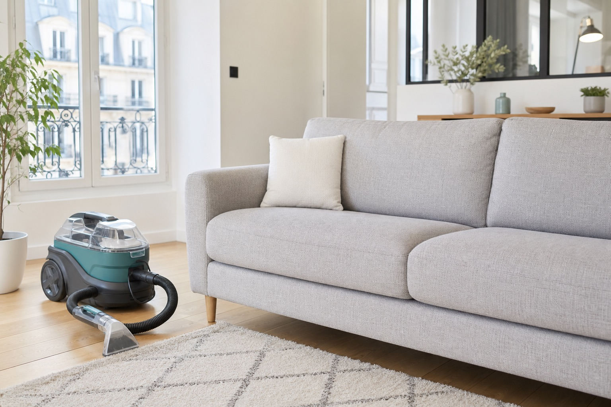

Canape tissu
Pour canapes droits, convertibles et assises familiales utilisees au quotidien.
Cergy et alentours
Demandez une estimation gratuite pour nettoyer votre canape, fauteuil, matelas ou tapis a domicile.

Demande locale
Decrivez votre besoin en quelques secondes. Selon votre localisation, le type de textile et la disponibilite des prestataires locaux, une solution pourra vous etre proposee.
Prestations recherchees
Pour canapes droits, convertibles et assises familiales utilisees au quotidien.
Estimation adaptee aux grands formats, meridiennes et canapes plusieurs places.
Nettoyage ponctuel pour fauteuil de salon, chaise textile ou assise tachee.
Demande possible pour matelas, odeurs, traces d'usage et entretien regulier.
Prise en compte de la taille, de la matiere et du niveau de salissure.
Pour textiles automobiles, taches localisees et remise au propre interieure.
Fonctionnement
Type, nombre de places, ville et taches principales.
Les informations servent a preparer une estimation coherente.
L'intervention depend des disponibilites et de votre zone.
Zone de recherche
La demande couvre notamment Cergy-Prefecture, Cergy-Saint-Christophe, Cergy-le-Haut, Pontoise, Osny, Eragny, Vaureal et Saint-Ouen-l'Aumone.
Questions frequentes
Le prix depend du type de canape, du nombre de places, de la matiere et de l'etat general. Une estimation gratuite peut etre demandee avec le formulaire.
La demande concerne principalement le nettoyage a domicile a Cergy et dans les communes proches, selon disponibilite des prestataires locaux.
Le sechage varie selon le textile, l'aeration de la piece et la methode utilisee. Cette information peut etre precisee apres description du canape.
Indiquez les taches, odeurs ou accidents dans votre message. Cela aide a evaluer la demande et les limites possibles.
Les demandes autour de Cergy-Pontoise, Pontoise, Osny, Eragny, Vaureal et Saint-Ouen-l'Aumone peuvent etre precisees dans le formulaire.
Devis gratuit
Votre demande aide a verifier la disponibilite et a preparer une estimation. Aucun paiement n'est demande sur ce site.